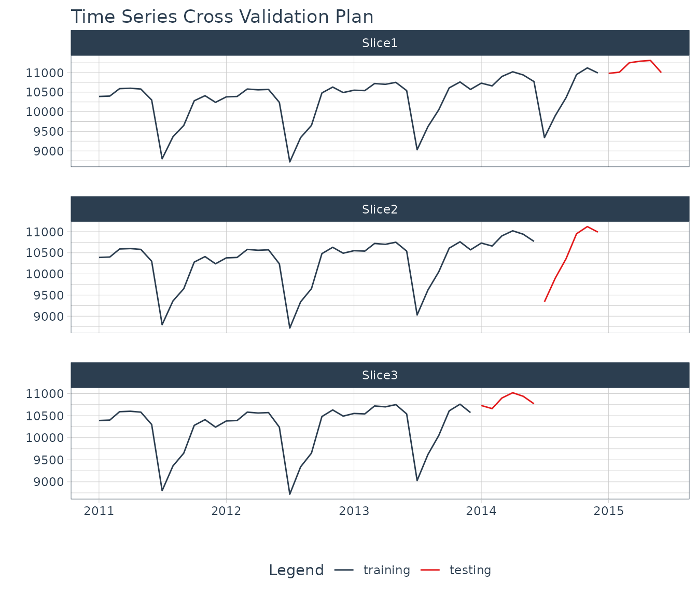

back-testing-and-hyperparameter-tuning.RmdMost models automatically included in finnts, including all multivariate models, have various hyperparameters with values that need to be chosen before a model is trained. Finn solves this by leveraging the tune package within the tidymodels ecosystem.
For each model that contains hyperparameters that need to be chosen before training,the entire historical data set is used to create various time series cross-validation splits using the timetk package. Refer to the code below for an example.
library(dplyr)
library(modeltime)
library(timetk)
# monthly data example
timetk::time_series_cv(
data = modeltime::m750 %>% dplyr::filter(date > "2010-12-01"), # entire historical data set
initial = 24, # initial periods to use as training data
assess = 6, # forecast horizon to hold out as testing data
skip = 6, # how many periods to move forward for each subsequent split,
# equal to back_test_spacing input in forecast_time_series() finnts function
cumulative = TRUE, # should the training data expand more than initial periods in each subsequent split
slice_limit = 3 # max number of splits to run
) %>%
timetk::plot_time_series_cv_plan(.date_var = date,
.value = value,
# Additional arguments passed to plot_time_series(),
.facet_ncol = 1,
.interactive = FALSE)
A tuning grid is then created within the model, using the tune_grid function from tune, depending on the hyperparameters that were passed to tune when creating a model specification. The tuning grid also takes the time series cross-validation (tscv) splits that were created (see example above). So within each tscv split, every combination of hyperparameters are used to train a model then create a forecast to compare to the hold out testing data. The optimal combination of hyperparameters are chosen based on what had the lowest root mean squared error (RMSE) across all tscv slices. That optimal combination is then refitted on the entire historical data set and a fitted model is returned.
Once every model is fitted on the entire historical data, with the final hyperarameters, it is then refitted again for back testing and to create the final future forecast. A time series cross validation process is ran again, similar to the process described in the hyperparameter selection process but with a few changes.
The tscv process tries to go back as far as possible, where the “initial” argument in the time_series_cv() function is set to one year. That gives us enough historical forecasts to be leveraged in an ensemble model, in which a multivariate machine learning model is fed forecasts from separate models and tries to find the optimal combination of all of them. If these ensemble models are chosen by the user to not run in finnts, then the slice limit is equal to the back test scenario number calculated automatically by finnts or supplied by the user (with an additional run to create the future forecast).
Important Note: The above refitting process may be triggering a warning light in your machine learning brain. Don’t worry, our process is intentional. This process violates some traditional machine learning workflow approaches, since the data used to select the hyperparameters is the back testing “test” data that will ultimately be used when selecting the best model to be used in creating the final future forecast. We could of just as easily done the below methods of hyperparmeter tuning.
The above approaches are the more textbook way of doing things, but run into scale issues. Doing this exhaustive hyperparmeter tuning process multiplies the model run time by at least 10X. This can even go to 100X if you follow the first approach in the list when selecting hyperparameters to use for a machine learning ensemble model. Following the second approach in the list could speed up run time but takes the assumption that the hyperparmeters chosen on data far into the past still hold for the most recent data we will use to forecast. This is often not the case when forecasting a companies revenue. Our process fixes these issues at the tradeoff of look ahead bias, but we believe this is a trade off worth making. Taking the back testing results with a grain of salt is important when using finnts. Previous results should only be a best case proxy of how these models will perform in the future, nothing more.